モード編集
モード編集について
モード編集画面よりモードの追加・編集・削除ができます。
モード編集画面への遷移
-
メイン画面左下の「メニュー」「モード管理」の順にクリックしてください。
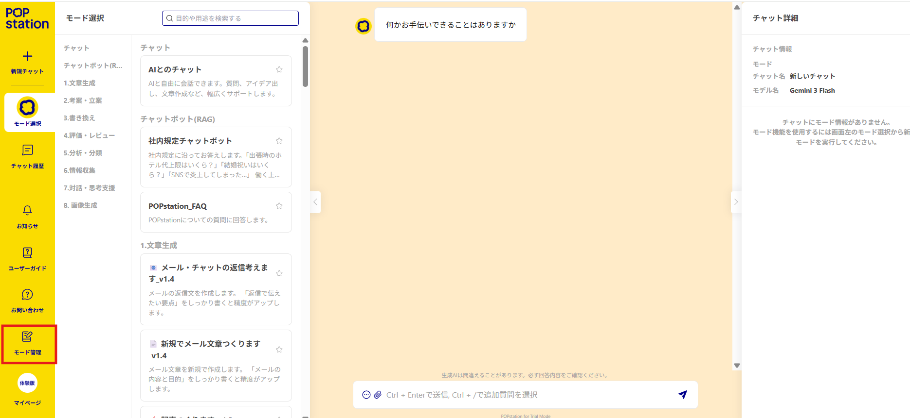
-
モード一覧画面が表示されます。
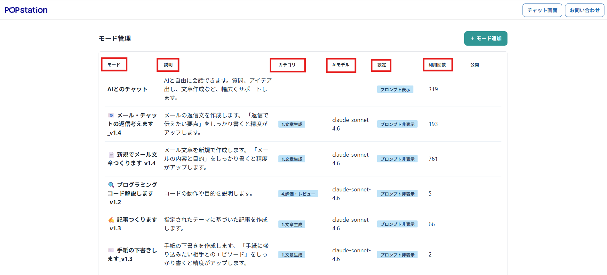
表示項目
モード一覧画面では各モードごとに以下の項目が表示されています。
- モード名：モードの名前
- 説明：モード説明
- カテゴリ：モードが分類されているカテゴリ
- モデル：デフォルトで設定されているAIモデル
- 設定：モードの設定
- 利用回数：これまでにモードが利用された合計回数
モードの追加
-
画面右上のモード追加ボタンをクリックしてください。
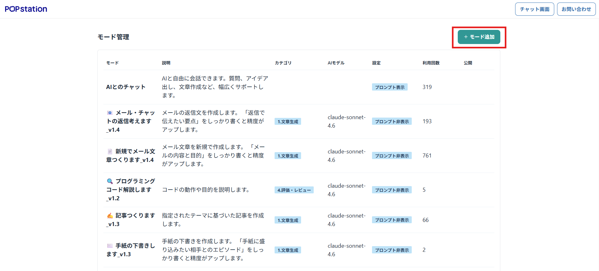
-
入力フォームに必要事項を入力してください。
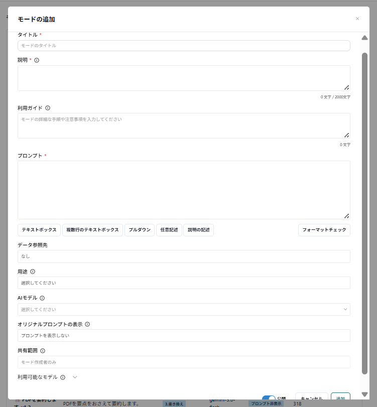
入力事項の説明
入力する内容は以下の項目です。(太字は必須事項です。)
- モードタイトル
- モードの名称です。
- モード説明
- モードの機能や特徴の説明です。モード選択画面に表示されます。
- 利用ガイド
- モードの使い方の詳細な説明です。モード実行画面に表示されます。
- モードプロンプト
- AIが回答の生成を行う際のプロンプトです。
- テキストボックスなどの条件入力の記述方法につきましては、本ページ内の「モードプロンプトの書き方」の項をご確認ください。
- データ参照先
- 回答を生成する際に参照するデータソースを選択します。「カスタムデータ」「カスタムデータ:ナビゲーションチャット」「Web検索」「URL読込」から選択できます。
- 「カスタムデータ」を選択すると、参照するデータフォルダを選択するメニューが表示されます。複数のデータフォルダを同時に選択して参照することができます。
- 「カスタムデータ:ナビゲーションチャット」を選択すると、曖昧な質問に対してAIが関連するカスタムデータを提示しながら対話を進める機能が有効になります。複数のデータフォルダを同時に選択して参照することができます。
- 「Web検索」を選択すると、プロンプトから関連するWebページを参照して回答します。
- 「URL読込」を選択すると、入力したURLを参照して回答します。
- モードカテゴリ
- モードの分類を行う機能です。
- 設定を行わない場合、自動的に未分類カテゴリに分類されます。
- モデル
- 利用する生成AIのモデルを設定できる機能です。
- 設定を行わない場合、システムのデフォルトモデルが使用されます。
- システムのデフォルトモデルについては「システム管理」の説明ページを確認してください。
- オリジナルプロンプトの表示
- モードが実行された際に、プロンプト全文を表示するかの有無を設定できる機能です。
- 共有範囲
- モードを公開する範囲を設定します。以下の4つの範囲から選択できます。
- 組織全体: 同じ組織（テナント）内の全ユーザーが利用できます。
- 指定のユーザーグループ: 選択したユーザーグループに所属するメンバーのみ利用できます。
- 指定のユーザー: 個別に指定したユーザーのみ利用できます。
- モード作成者のみ: 作成者本人のみが利用できます。（個人モード）
- ※管理者およびユーザー管理者は、他のユーザーが作成したモードの共有範囲を変更することができます。
- モードを公開する範囲を設定します。以下の4つの範囲から選択できます。
- 公開設定
- モードを「公開」にするか「非公開」にするかを切り替えます。
- 非公開に設定すると、共有範囲内であってもモード選択画面には表示されず、利用できなくなります。
- 利用可能なモデル
- このモードで使用できるモデルを設定する機能です。
- チェックを入れたモデルのみが、モード実行時の選択肢として表示されます。
- ※利用者自身が使用権限を持たないモデルは、ここでチェックを入れても表示されません。
- モードタイトル
-
入力完了後に、追加ボタンをクリックするとモードが追加されます。
注意点
※ モードプロンプトのフォーマットが正しくない場合は保存できません。
モードの編集
モード作成者と管理者・ユーザー管理者は、モードの編集を行うことができます。
-
モード管理画面から、修正するモードの右端にある「…」をクリックして、変更ボタンをクリックしてください。
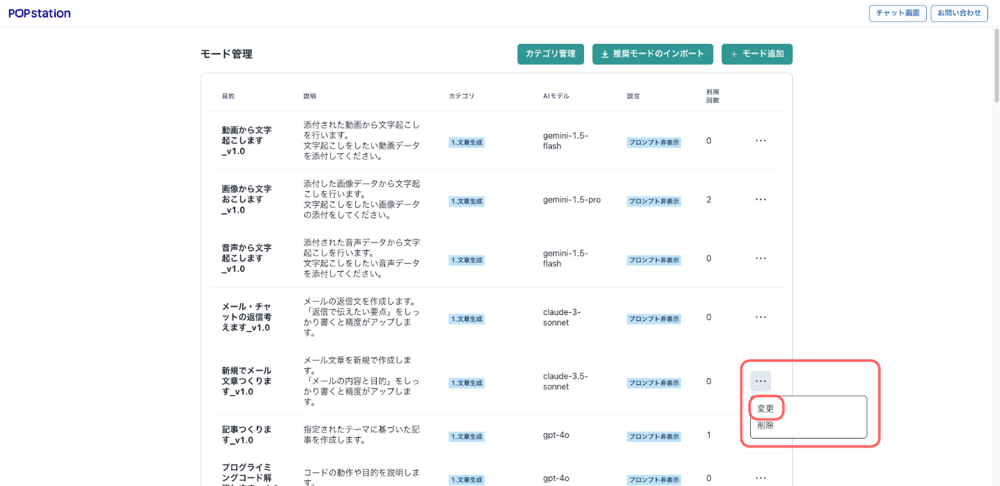
-
変更箇所を編集してください。
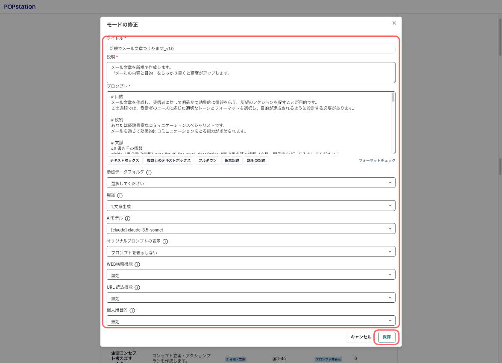
-
保存ボタンをクリックすると変更が保存されます。

モードの複製
既存のモードの設定をコピーして新しいモードを作成することができます。
-
モード管理画面から、複製したいモードの右端にある「…」をクリックして、複製ボタンをクリックしてください。
-
元のモードの設定（タイトル、説明、プロンプト等）が入力された状態で編集画面が表示されます。必要に応じて内容を調整し、保存ボタンをクリックしてください。
モードの削除
モード作成者と管理者・ユーザー管理者は、モードの削除を行うことができます。
修正するモードの右端にある「…」をクリックして、削除ボタンをクリックしてください。
モードプロンプトの書き方
モードプロンプトでは、QT-GenAI特有のプロンプトの書き方があります。
以下のような種類がありますので、状況に応じてご使用ください。
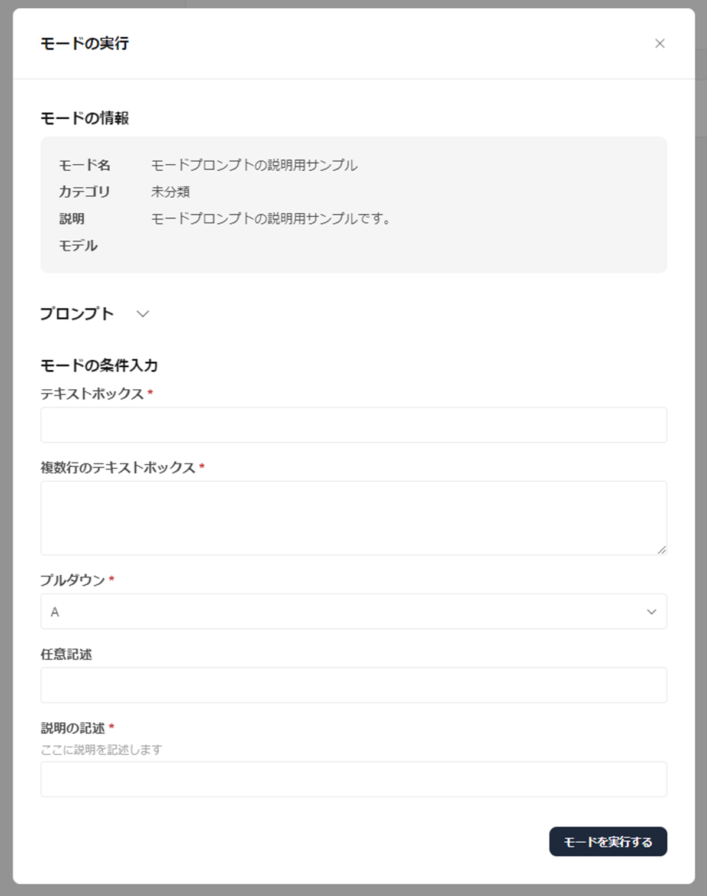
サンプル記入ボタン
モードプロンプト欄の下にあるサンプル記入ボタンをクリックするだけで、以下で説明するプロンプトを簡単に挿入することができます。
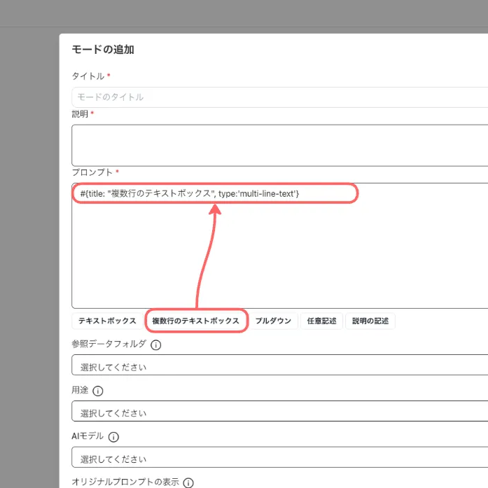
入力タイプ
- テキストボックス
#{title: "テキストボックス", type:"text"}
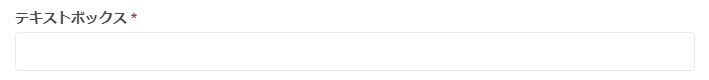
- 複数行のテキストボックス
#{title: "複数行のテキストボックス", type:"multi-line-text"}
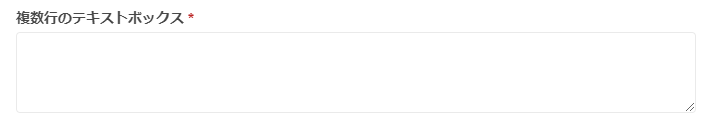
- プルダウン（ドロップダウンリスト）
#{title: "プルダウン", type: "select", options:["A", "B", "C", "D", "E"]}
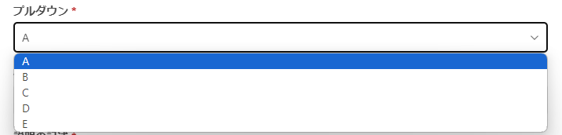
入力オプション
- 任意記述
#{title: "任意記述", type:"text", optional: "true"}
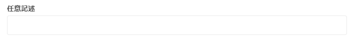
- 説明の記述
#{title: "説明の記述", type:"text", description: "ここに説明を記述します"}
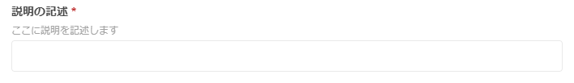